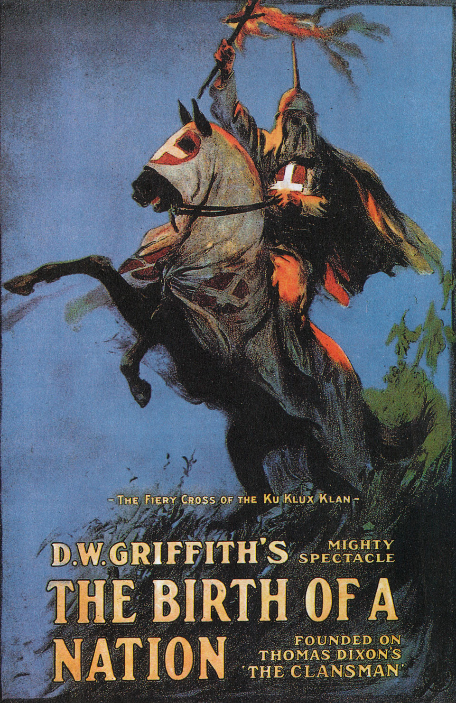
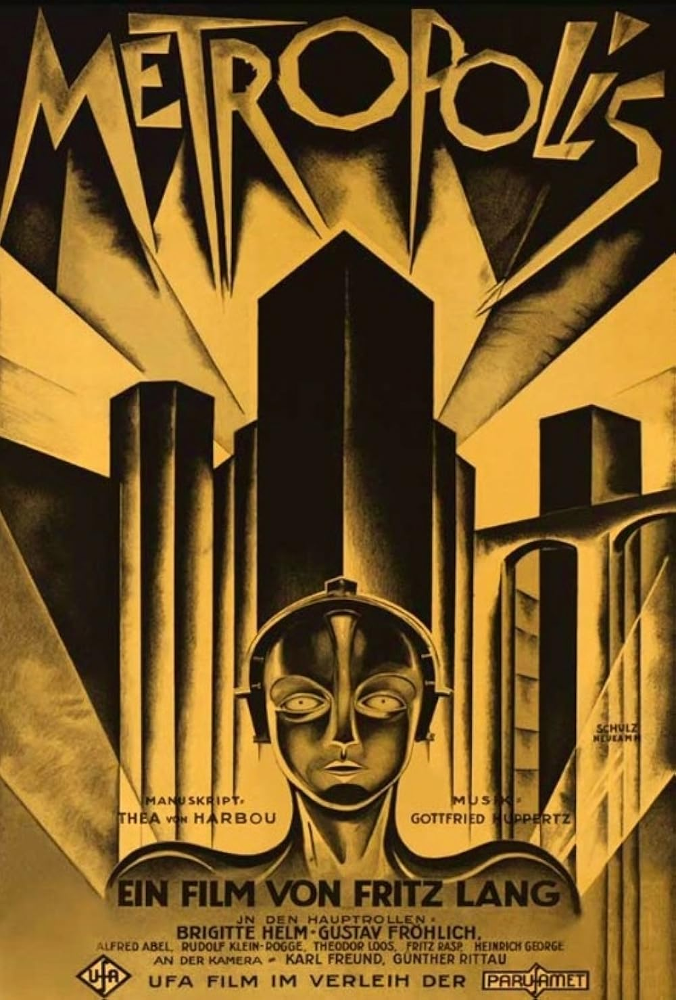
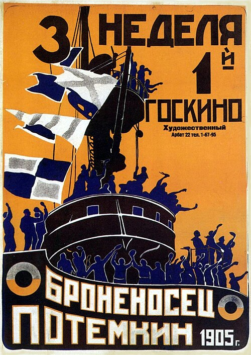
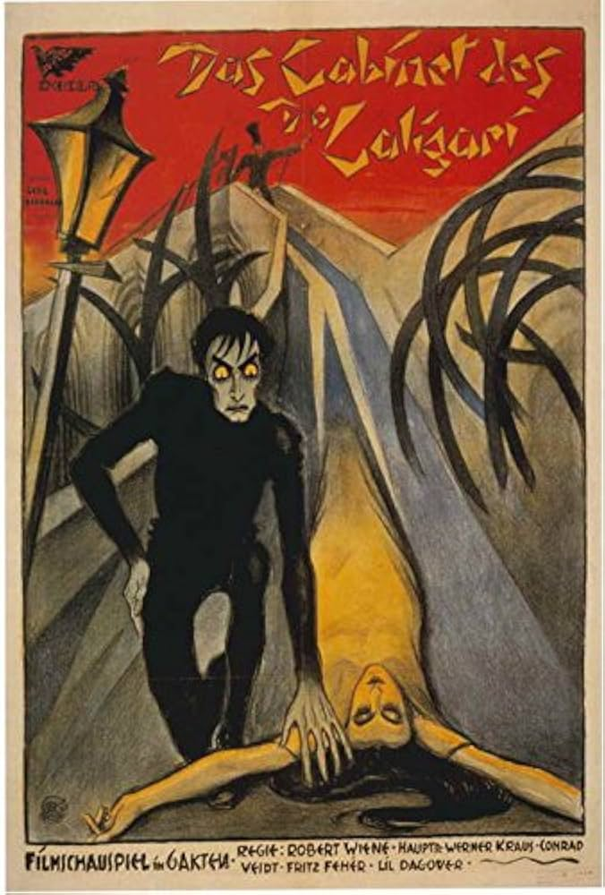
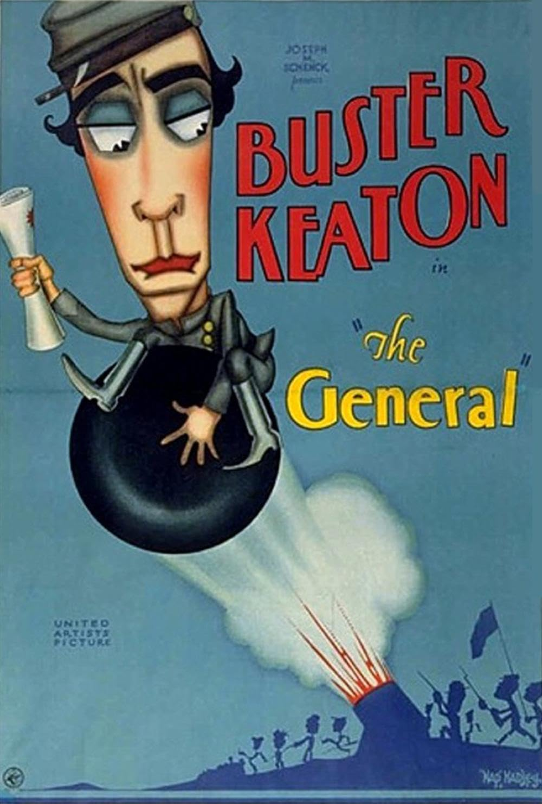

Early cinematic landmark in scale and editing, controversial in historical context.

A dystopian vision of class struggle in a massive futuristic city.

A defining montage film famous for its emotional intensity and editing rhythm.

Expressionist horror with warped sets and psychological storytelling.

Buster Keaton’s silent comedy masterpiece of precision stunt work.
Although a groundbreaking period, the Silent Film Era slowly died due to the rapid adoption of synchronized sound in film, ushering in a new period and new wave of cutting-edge ways to immerse in the medium.